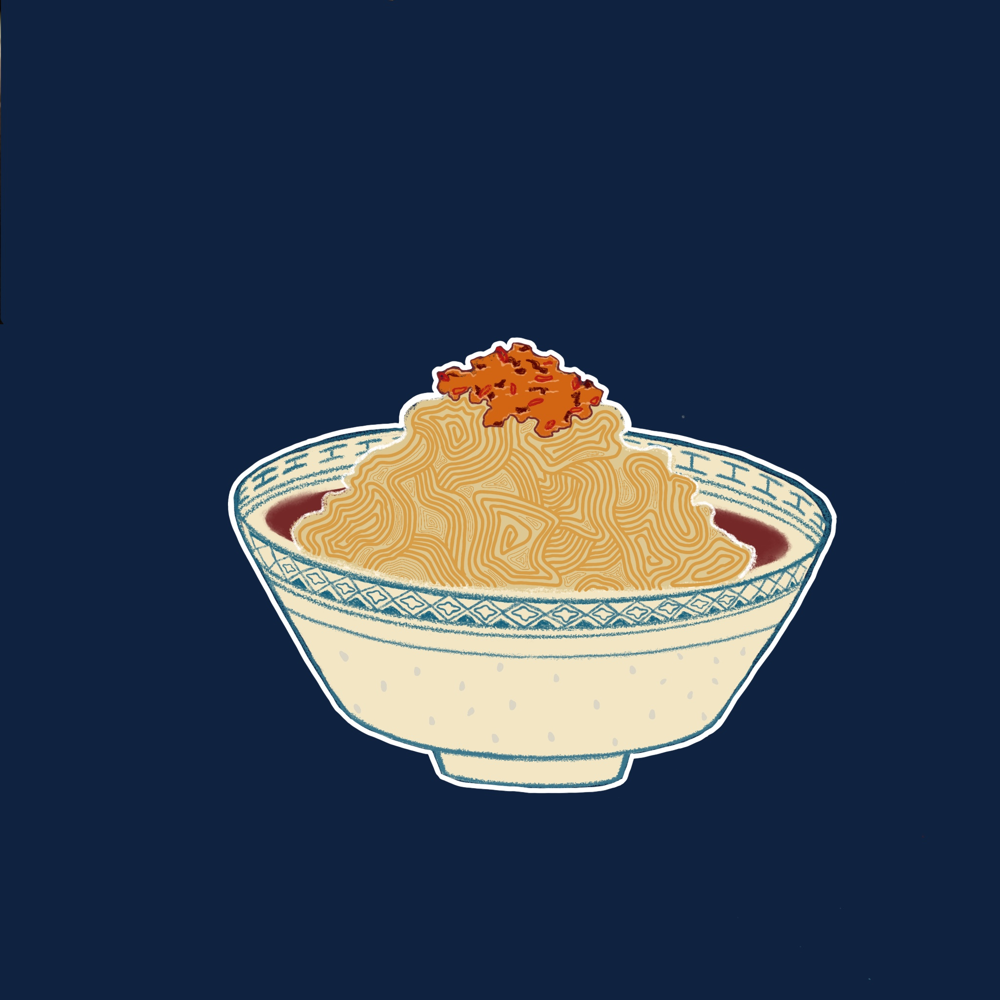
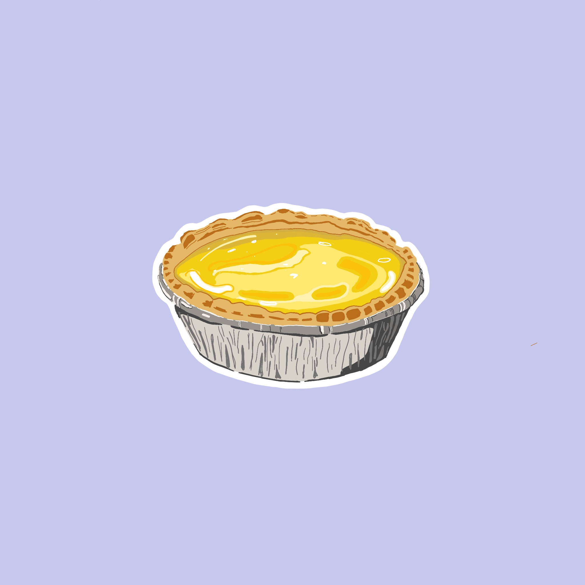
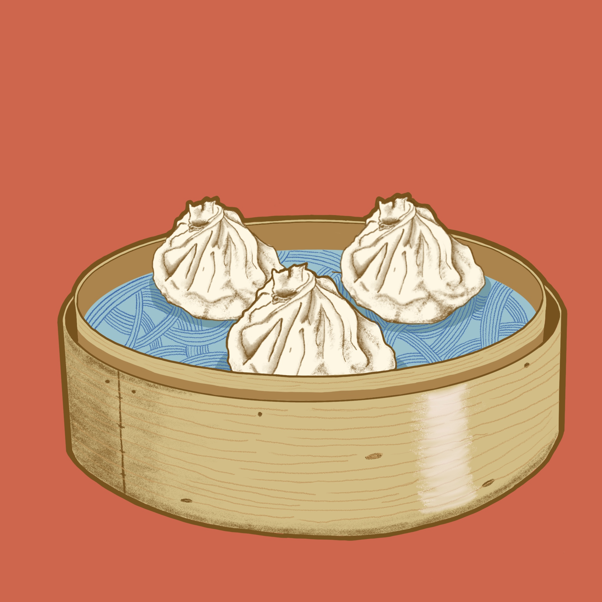
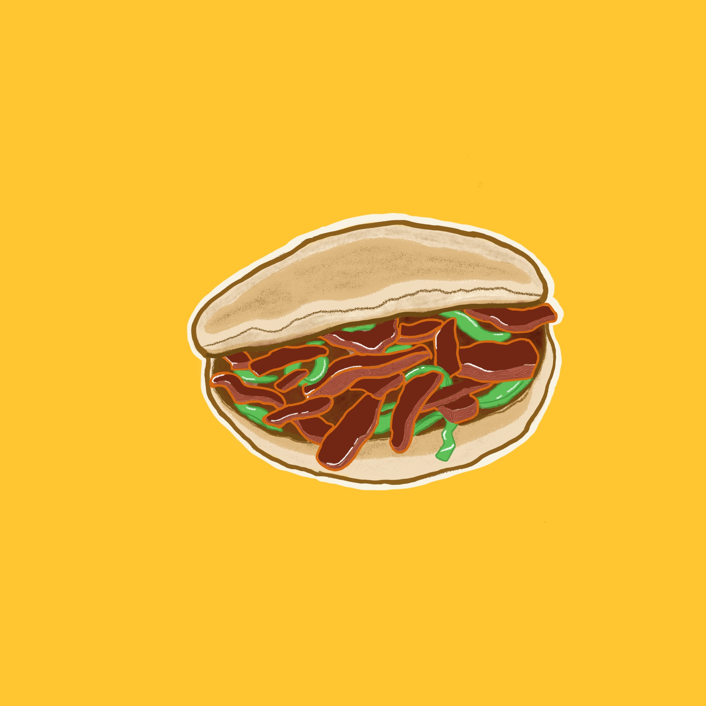

30 Apr 2020
website: tigerforkdc.com
how to get it: takeout or order it
here
what it is: contemporary Chinese, Hong Kong fare

Dandan noodles or 担担面 in Chinese is a traditional Szechuan noodle dish with a sauce made from sesame paste, chili oil and some ground meat. I love this dish for its spices-served cold to balance out that kick. Tiger Fork’s rendition adds lamb and cumin as well.
“Insert a quote here if you ever hear back from them haha”
The management group which Tiger Fork is a part of has started a staff relief gofundme for there restaurant staff and workers. You can access the link here to help them out.
29 Apr 2020

Chinese egg tarts or 蛋挞 are a classic dim sum dish. Similar to the Portuguese pasteis de nata.
“Insert a quote here if you ever hear back from them haha”
29 Apr 2020
website: teadmlounge.com
how to get it: takeout or order it
here
what it is: Vietnamese bubble tea shop

Chinese egg tarts or 蛋挞 are a classic dim sum dish. Similar to the Portuguese pasteis de nata.
“Insert a quote here if you ever hear back from them haha”
14 Apr 2020
website: Dumplings & Beyond
how to get it: takeout or call them--they do free delivery
what it is: Chinese dumplings (and beyond!)

Some description about XLB
“Insert a quote here if you ever hear back from them haha”
14 Apr 2020
website: Xi'An Gourmet
how to get it: takeout or call them--they do free delivery
what it is: Chinese dumplings (and beyond!)

Some description about rou jia mo
“Insert a quote here if you ever hear back from them haha”